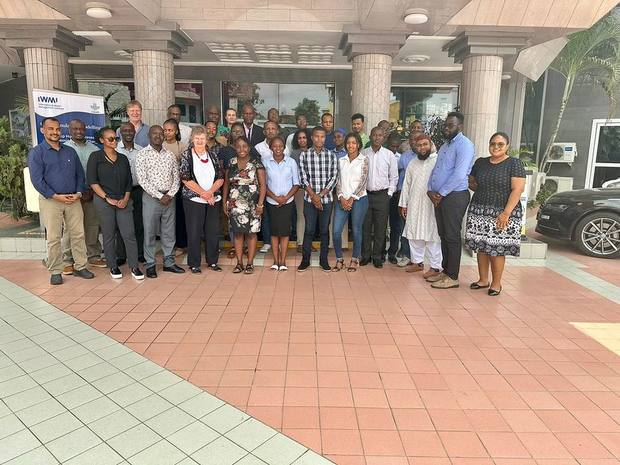
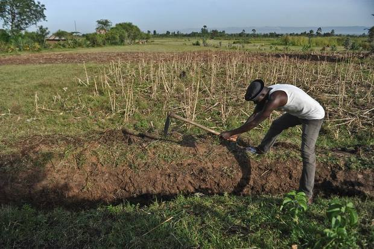
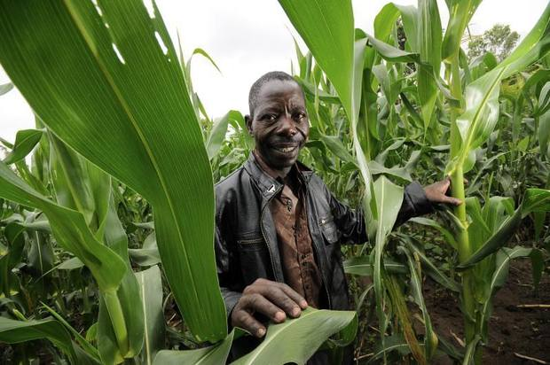
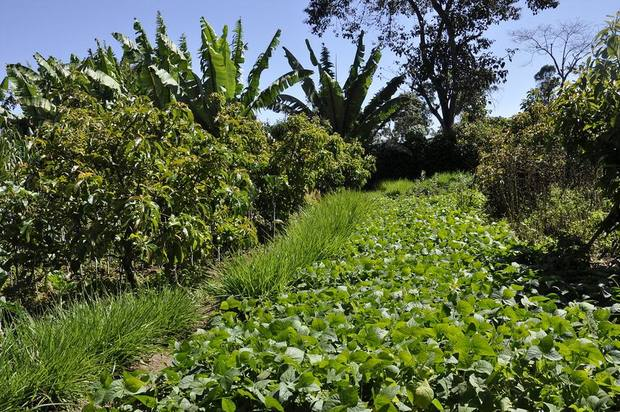

Storytelling patterns, tested against real material
The plan of 03/09/2026 puts the storytelling layer in V2 and frames the Lexicon work as complementary rather than as the foundation: their site carries the external impact narrative, this one carries resource access, and the data piece is a subset of it. Merging the two is the stated goal, but not at their price.
So this page borrows four patterns from lexiconoffood.com/regen-ag, read on 03/09/2026, and fills each with material the catalogue already holds. Not one word of narrative has been written to make them look better. Where a pattern needs content that does not exist, it says so.
Pattern 1. The audience-labelled module
Every section of their page opens with an audience label, then a short title, two or three sentences, one image and a single call to action. The label is the part worth stealing: it tells a reader in three words whether the next block is for them, which is exactly what a hub serving four audiences at once cannot currently do.
Climate rationale, from evidence to narrative

A notebook that turns hazard and exposure data into the risk narrative a Green Climate Fund proposal has to contain. Held in the catalogue as a project with a named champion.
See what the catalogue holdsFour climate records, with their limits stated

Resolution, time coverage, update cadence, licence and access format, recorded per dataset, with the gaps visible. The badge is a count of recorded fields, not a quality rating.
Open the datasetsInnovation catalogues, and whether they touch climate

The round 2 feedback asked for exactly this: fast extraction from TAAT, ACCRA and WOCAT, and a way to tell whether what they hold connects to climate at all.
Open the cataloguesPattern 2. Numbered annotations over an image
Their signature device: a photograph with numbered notes laid over it, so a reader learns by looking rather than by reading a paragraph. It is the pattern most often asked for and the most dangerous to copy, because annotations invite invented detail. Every note below is a metadata field already recorded against a real catalogue entry, and nothing has been added to make the picture tell a better story.

- CHIRPS gives rainfall at 0.05 degrees, 1981 to present, updated monthly. Recorded licence: open.
- ERA5 gives temperature and other variables hourly from 1940, at roughly 31 km. The field a reader most often wants, bias adjustment, is not recorded.
- Searching drought across all 51 items returns three resources and no project, although drought was the most recurrent topic in the check-in of 10/08/2026.
Pattern 3. The validation badge
Their case studies carry a small completion marker. Ours carries a count of how many of six metadata fields are recorded, which is the same idea backed by something checkable: ✓ 6/6 metadata means every field is recorded, and 4/6 metadata means two are missing and hovering says which.
This is the one Lexicon pattern worth taking into V1 rather than V2, because it costs nothing to compute and it makes the catalogue's real state visible on every card. It is also the pattern most likely to be objected to, since it publishes the gaps. That objection is the argument for fixing ingestion first, which is decision D8.
A badge counts recorded fields. It says nothing about whether a dataset is any good, and it must never be presented as a quality score.Pattern 4. The curated journey
Halfway down their page a reader picks a role, and the page reassembles for that role. It is the most tempting pattern here, because the Hub has four candidate audiences and no ranking. It is also the one to be most careful with: a role selector can look like a decision while quietly avoiding one, and the meeting of 01/09/2026 concluded that a site built for all four audiences is the site that already exists.
Shown here as a working demonstration so the trade-off can be argued from something real. Each route is assembled by filtering fields the catalogue already has.
Candidate users and the evidence for each are from the design strategy note of 09/08/2026 and the V1 decision meeting pack of 01/09/2026. The national partner route is deliberately left to come back nearly empty: Nigeria is the only African country named anywhere in the item fields across all 51 items.What was deliberately not taken from the Lexicon work
| Their element | Not borrowed, because |
|---|---|
| Illustrated concept sequences, eight captionless panels | They carry the argument in commissioned artwork. Nothing equivalent exists here, and a sequence of stock photographs would be decoration pretending to be explanation. |
| Contributor bylines under portraits | The Hub lists six use-case champions, not authors of narrative. Attaching bylines to material they did not write would misattribute it. |
| The 60-logo partner grid | Partner permission and an accurate list are needed before any organisation's mark appears. Neither exists for this site. |
| Their typography and colour | Cream ground and near-black type are used only inside these preview blocks, to mark them as a different register. The CGIAR Climate Action palette stays in charge everywhere else. |
| Their impact narrative itself | That is their content and their commission. The 03/09/2026 framing is complementary, not foundational, and merging is a negotiation rather than a copy. |